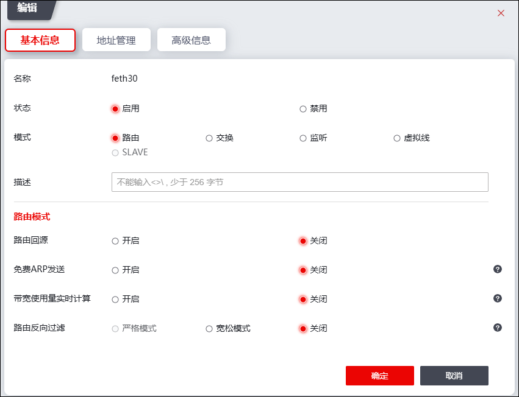
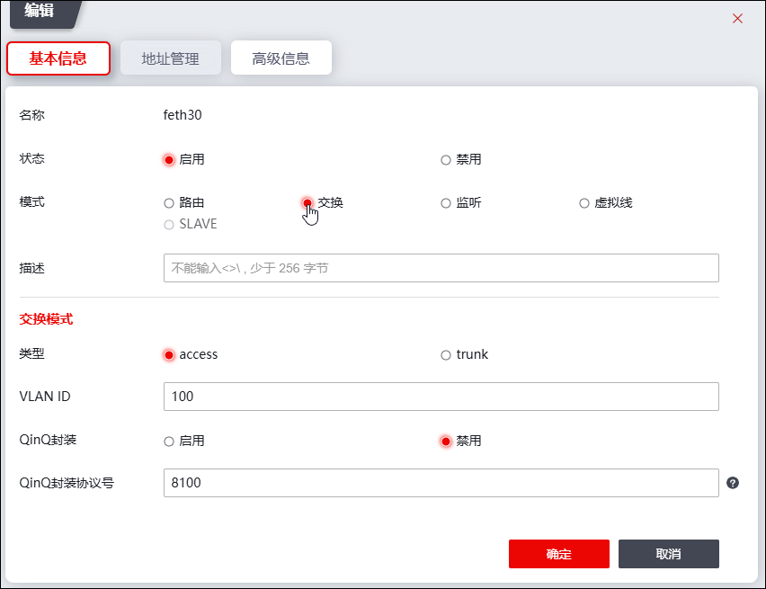

NGFW的接口支持五种工作模式：路由模式、交换模式、listening模式、虚拟线模式和聚合模式，默认情况下，所有接口均工作在路由模式下。
配置接口基本信息的操作步骤如下：
| 步骤1 | 选择 。 |
| 步骤2 | 选中某接口所在行，点击列表上方的『编辑』，弹出“编辑”窗口，如下图所示。 |

| 步骤3 | 设置接口基本属性。 |
在设置基本属性时，各项参数的具体说明如下表所示。
参数 |
说明 |
|---|---|
名称 |
显示接口名称。 |
状态 |
设置是否启用接口，点击状态开关可切换接口状态（启用/禁用）。 |
模式 |
设定接口工作在路由模式、交换模式、监听模式、虚拟线模式、聚合模式。接口默认工作在路由模式。当该接口加入到聚合组后时，“模式”参数会显示为“SLAVE”且不可编辑。关于聚合组的配置具体请参见 配置聚合接口。 |
描述 |
输入对该接口的简要描述。 |
| 步骤4 | 设置接口工作模式相关参数。 |
Ø路由模式
当在“基本信息”处设置接口工作在“路由”模式时，配置界面如上图所示。
参数 |
说明 |
|---|---|
路由回源 |
路由回源功能是指在特定业务需求下，确保数据包的响应能够通过接收该数据包的同一接口发送。这样做可以保持数据流的一致性，即数据包的来源和目的地之间的通信始终通过同一个接口进行。 操作步骤： 1.配置静态路由：需要为目标地址配置一条“出接口”为该接口的静态路由。 2.启用路由回源：在接收数据包的接口上启用路由回源功能。这样，当该接口收到正向数据包时，任何从该地址返回的响应数据包都将通过这个接口发送出去。 前提条件： ·必须已经存在一条以该接口为出口的静态路由。 效果： 启用此功能后，所有通过指定接口进入的数据流，其反向数据流也将通过同一接口转发，从而保证了数据通信的连贯性和效率。 |
免费ARP发送 |
设置是否开启接口周期性发送免费ARP。启用免费ARP发送功能，可在该接口上预防ARP欺骗攻击。开启免费ARP功能，可设置接口发送免费arp的时间间隔，取值范围：1-1800，单位为秒。 |
带宽使用量实时计算 |
带宽使用量实时计算功能用于多径路由时的报文选路。 当接口开启了这个功能后，需要指定一个带宽阈值，系统会实时计算该接口的带宽使用情况。当报文进行多径路由选路时，会计算开启了该功能的路径（出接口）的实时带宽使用量是否超出了带宽阈值，如果该路径没有超出带宽阈值，则这条路径为可参与选路路径，反之为不可参与选路路径。未开启该功能的路径，默认为可参与选路路径。然后，按照WCMP策略在这些可参与选路的路径中选择一条路径进行报文转发。当所有路径的实时带宽使用量都超出了带宽阈值时，系统会认为这些路径都是可选路径，并直接使用WCMP策略进行多径路由选路。 |
带宽阈值 |
开启带宽使用量实时计算功能后需配置该参数。 设置接口支持的最大带宽，取值范围：1-40000MB。 |
带宽过载保护比 |
开启带宽使用量实时计算功能后需配置该参数。 设置NGFW启动接口带宽过载保护机制的带宽使用率。 |
路由反向过滤 |
路由反向过滤功能允许在转发数据包时进行额外的路由检查，提网络的安全性和数据包的正确转发率。该功能通过两次路由查询来实现： 1.首次路由查询： 根据数据包的目的地址进行常规路由查询。 2.第二次路由查询： 在首次查询成功后，根据数据包的源地址或入接口进行第二次查询。 功能开启与报文处理： ·两次查询均成功： 如果两次路由查询都成功，数据包将根据首次查询的结果进行转发。 ·首次查询失败： 如果首次查询失败，将不会进行第二次查询，数据包将被丢弃。 ·第二次查询失败： 如果首次查询成功但第二次查询失败，数据包同样会被丢弃。 模式选择： ·严格模式： 需要根据源地址和入接口进行路由查询。启用此模式前，必须先启用接口的路由回源功能。 ·宽松模式： 仅根据源地址进行路由查询，无需路由回源功能。 操作限制： 1.开启/关闭顺序： 严格模式下，必须先开启接口的路由回源功能，然后才能开启路由反向过滤功能。关闭时，需先关闭严格模式的路由反向过滤功能，才能关闭路由回源功能。 2.接口设置： 应在接收数据包的接口上开启路由反向过滤功能，以确保在转发数据包时进行路由反向过滤。 |
Ø交换模式
当在“基本信息”处设置接口工作在“交换”模式时，配置界面如下图所示。

在设置接口交换模式参数时，各项参数的具体说明如下表所示。
参数 |
说明 |
|
|---|---|---|
类型 |
设置该交换接口的类型。可选项：access和trunk。 Øaccess模式：该交换接口只允许一个VLAN通过。 Øtrunk模式：该交换接口可以允许多个VLAN通过。 |
|
类型=access |
VLAN ID |
设置该access接口允许哪个VLAN ID的报文通过，取值范围为1-4094。 |
类型=trunk |
Allowed VLAN |
设置该Trunk接口允许哪些VLAN ID的报文通过。VLAN值的取值范围：1-4094。 格式举例： 1-10表示属于VLAN1到VLAN 10； 1，10表示属于VLAN1和VLAN10。 |
NATIVE VLAN |
设置NGFW的NATIVE VLAN。 |
|
QinQ封装 |
设置是否进行QinQ封装。 |
|
VLAN VPN封装协议号 |
设置QinQ功能使用的协议类型，数值类型，十六进制形式，默认为8100。 说明： 为了实现不同厂商的设备互通，接口QinQ外层VLAN Tag的协议类型应该配置为和该接口连接的设备能够识别的协议类型。VLAN VPN封装协议号一般只在网络侧接口配置，用于指定运营商采用的协议类型。 |
|
Ø监听模式
当接口基本信息的“模式”参数设置为“监听”后，其工作模式为“监听”。
Ø虚拟线模式
当接口基本信息的“模式”参数设置为“虚拟线”后，其工作模式为“虚拟线”。此时，需要设置虚拟线的对端接口。设置完成后对端接口的工作模式自动设置为虚拟线模式。
ØSLAVE模式
当工作在路由模式的物理接口加入到聚合接口后，其工作模式为“SLAVE”，关于聚合接口的配置具体请参见 聚合接口。
| 步骤5 | 设置完成后，点击【确定】按钮完成接口基本信息的设置。 |